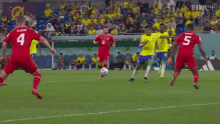

<div id="telaCasemiro" style="display:none; position:fixed; inset:0; background:rgba(255,255,255,.97); z-index:10000; overflow:auto; padding:30px;">

    <div class="caixa-mensagem">

        

        <h2 style="color:#ff4d6d; margin-bottom:20px;">
            O dia mais importante ❤️
        </h2>

        <p style="line-height:1.8; color:#444; text-align:left;">
            Pode parecer só um gol do Casemiro contra a Suíça.

            Mas se esse gol não tivesse acontecido,
            talvez eu não tivesse te conhecido pessoalmente.

            Então, por mais estranho que pareça,
            esse foi um dos momentos mais importantes da minha vida.

            Foi por causa dele que eu pude viver tudo o que veio depois.
            Cada conversa, cada abraço, cada momento ao seu lado.

            E sinceramente? Eu assistiria esse gol mil vezes se isso significasse te encontrar de novo.
        </p>

        <button class="btn-fechar" onclick="fecharCasemiro()">
            Fechar
        </button>

    </div>

</div>
